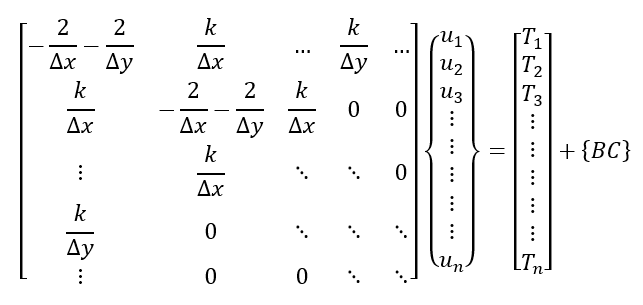
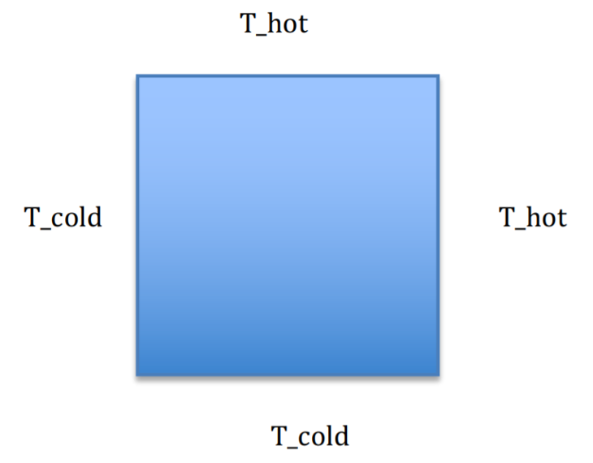
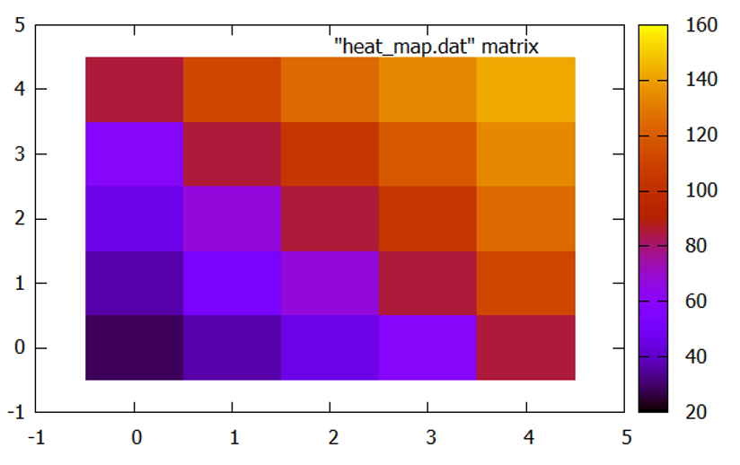

In order to improve my C++ skills and also learn more about computational methods I decided to take on a small project to conduct a heat transfer simulation using the finite difference method in C++. I decided to use a simple square geometry and made the following assumptions:
The heat equation in Cartesian coordinates is:
$$\frac{\partial^2T}{\partial^2x}+\frac{\partial^2T}{\partial^2y}+\frac{\partial^2T}{\partial^2z}+e_{gen}=\rho c$$Taking into consideration the assumptions we can cancel some terms and the resultant equation becomes:
$$\frac{\partial^2T}{\partial^2x}+\frac{\partial^2T}{\partial^2y}=0$$To use the finite difference method (FDM), I used the center Euler method. The general equation is shown in the following two lines in i and j directions respectively:
$${\frac{\partial u}{\partial x}}_i = \frac{1}{\Delta x}(u_{i+1}-2u_{i} + u_{i+1})$$ $${\frac{\partial u}{\partial y}}_j = \frac{1}{\Delta y}(u_{j+1}-2u_{j} + u_{j+1})$$Translating the 2-D heat equation in terms of the Euler’s equations produces:
$$\frac{\partial u}{\partial y}_j = \frac{1}{\Delta y}(u_{j+1}-2u_{j} + u_{j+1})$$Translating this into matrix form gives the following:
I chose the Boundary conditions to be T_hot = 160 C, T_cold = 20 C. The hot and cold sides of the square can be seen in Figure 1:
I wrote the following C++ code to simulate the heat transfer problem. In this code I I’ve also written a Gaussian elimination solver which solves the solution matrix that is set up in the main function.
#include
#include
#include
#include
#include
std::vector gauss_elim(std::vector> A) {
std::cout << "------------------------------------------------------\n";
std::cout << "------------------------------------------------------\n";
std::cout << "| GUASSIAN ELIMINATION |\n";
std::cout << "------------------------------------------------------\n";
std::cout << "------------------------------------------------------\n\n\n";
int n = A.size();
//searching for maximum in column
for (int i = 0; i < n; i++) {
double maxEl = abs(A[i][i]);
int maxRow = i;
for (int k = i + 1; k < n; k++) {
if (abs(A[k][i]) > maxEl) {
maxEl = abs(A[k][i]);
maxRow = k;
}
}
//swapping maximum row with current row
for (int k = i; k < n+1; k++) {
double tmp = A[maxRow][k];
A[maxRow][k] = A[i][k];
A[i][k] = tmp;
}
//make all rows below this one 0 in current column
for (int k = i+1; k < n; k++) {
double c = -A[k][i]/A[i][i];
for (int j = 1; j < n+1; j++) {
if (i == j) {
A[k][j] = 0;
} else {
A[k][j] += c*A[i][j];
}
}
}
}
// solving equation for upper triangular matrix A
std::vector x(n);
for (int i = n-1; i >= 0; i--) {
x[i] = A[i][n] / A[i][i];
for (int k = i-1; k >= 0; k--) {
A[k][n] -= A[k][i] * x[i];
}
}
std::cout << "Finished using Guassian Elimination..." << "\n\n";
return x;
}
int main(){
//number of points in each dirn
int nr = 5;
int nphi = 5;
double r_max = 0.05;
double r_min = 0.01;
double phi_max = 360;
double phi_min = 0;
double del_r = (r_max - r_min)/nr;
double del_phi = (phi_max - phi_min)/nphi;
std::vector r_values;
for (int i = 0; i < nr; i++){
r_values.push_back( r_min + i*del_r);
std::cout << r_values[i] << std::endl;
}
//Temp boundary condition
double Tr_0 = 20;
double Tr_R = 160;
// thermal conductivity
double k = 0.25;
//building A matrix
int row = nr*nphi;
int col = row;
std::vector line (row + 1, 0);
std::vector> A (row, line);
// zero-ing the matrix
for (int i = 0; i < row; i++){
for (int j = 0; j <= col; j++){
A[i][j] = 0;
}
}
int index = 0;
for (int j = 0; j < nr; j++){
for (int i = 0; i < nphi; i++){
// global index
index = i + nphi*(j);
//Diagonal
// j + 1 or just j ?
A[index][index] = -k/(pow(r_min*del_phi , 2));
//Phi Direction
if (j == 0){
A[index][row] = A[index][row] + (k*Tr_0)/(pow(r_min*del_phi , 2));
} else if (j == 1){
A[index][index-1] = k/(pow(r_min*del_phi , 2));
A[index][index+1] = k/(pow(r_min*del_phi , 2));
} else{
A[index][index-2] = -k/(pow(r_min*del_phi , 2));
A[index][index-1] = k/(pow(r_min*del_phi , 2));
A[index][index+1] = k/(pow(r_min*del_phi , 2));
}
if (j == nr){
A[index][row] = A[index][row] + (k*Tr_R)/(pow(r_min*del_phi , 2));
}
//R Direction
if (index == j){
A[index][index+(nphi-1)] = k*r_values[i-1]/(r_min*pow(del_r, 2));
A[index][index+nphi] = -k*r_values[i+1]/(r_min*pow(del_r, 2));
A[index][index+(nphi+1)] = k*r_values[i+1]/(r_min*pow(del_r, 2));
} else {
A[index][index+(nphi-2)] = -k*r_values[i-1]/(r_min*pow(del_r, 2));
A[index][index+(nphi-1)] = k*r_values[i-1]/(r_min*pow(del_r, 2));
A[index][index+nphi] = -k*r_values[i+1]/(r_min*pow(del_r, 2));
A[index][index+(nphi+1)] = k*r_values[i+1]/(r_min*pow(del_r, 2));
}
if (index == nphi*(nr-1)){
A[index][index+(nphi-2)] = -k*r_values[i-1]/(r_min*pow(del_r, 2));
A[index][index+(nphi-1)] = k*r_values[i-1]/(r_min*pow(del_r, 2));
A[index][index+nphi] = -k*r_values[i+1]/(r_min*pow(del_r, 2));
}
}
}
for (int i = 0; i < row; i++){
for (int j = 0; j <= col; j++){
std::cout << A[i][j] << " ";
}
std::cout << std::endl;
}
std::cout << A.size() << " x " << A[0].size();
auto result = gauss_elim(A);
for (std::vector::iterator iter = result.begin(); iter != result.end(); iter++){
std::cout << *iter << '\n';
}
}
In order to plot the result that C++ produced I used a software called gnuplot which is a command line based plotter.
As you can see from the above figures the temperature distribution seems realistic and confers with solutions found elsewhere on the internet and texts.